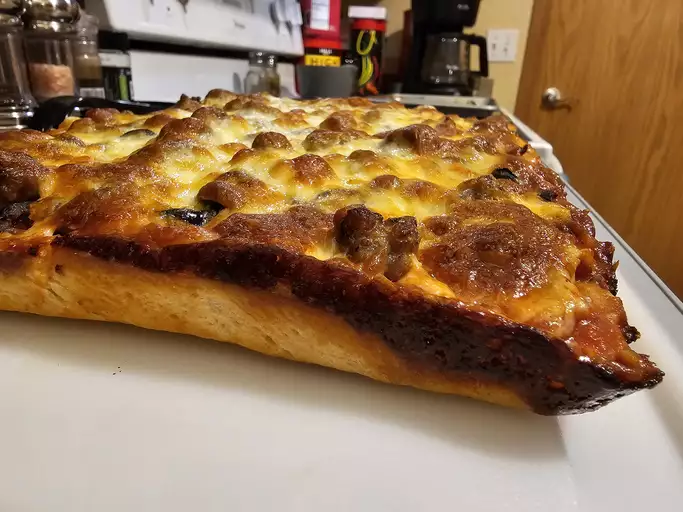

Pizza recipe

Ingredients:
- 2 ½ cups all-purpose flour, or as needed
- ¾ teaspoon salt
- 1 envelope Fleischmann's® RapidRise Yeast*
- 1 cup very warm water (120 degrees F to 130 degrees F)
- 2 tablespoons olive oil
Steps:
- Combine 2 cups flour, salt, and yeast in a large bowl.
- Stir in very warm water and oil until combined, then stir in just enough of remaining 1/2 cup flour to make a soft dough.
- Knead on a lightly floured surface until smooth and elastic, 4 to 6 minutes.
- Cover and let rest for 10 minutes.
- Preheat the oven to 400 degrees F (200 degrees C).
- Lightly oil your selected pan(s) and sprinkle with cornmeal.
- Shape dough into a smooth ball, then divide (if necessary) and roll to fit pan(s).
- Bake in the preheated oven until crust is golden brown and cheese is melted, 20 to 30 minutes; baking time will depend on the size and thickness of the crust and the amount of toppings.